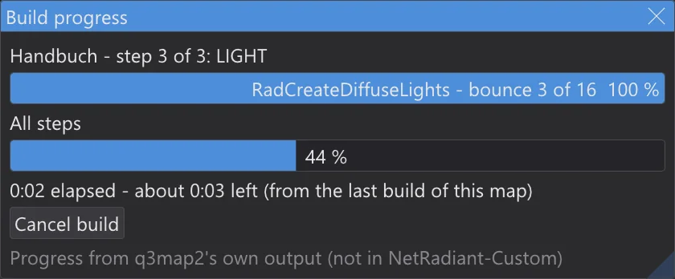
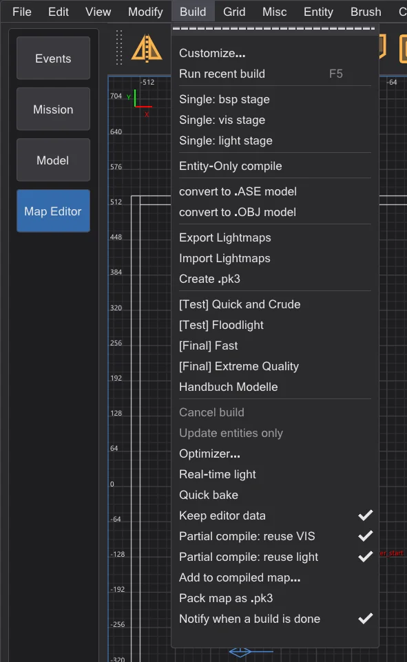
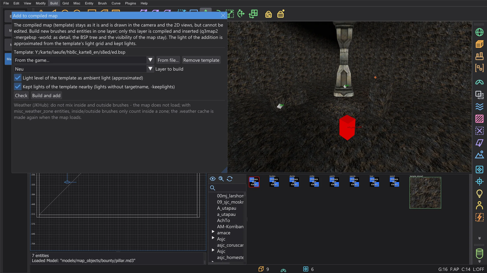
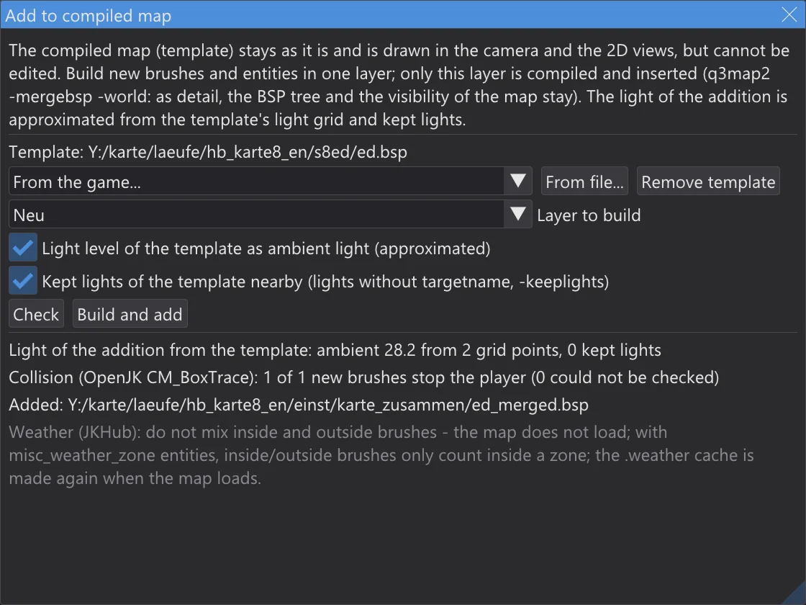

Map editor: build progress and partial compiles
See how far a build is and how long it still takes, build again only what changed - with the same result as a full build - and add a new part to a compiled map without compiling the map again.
Build progress#

- While a build from the Build menu runs, the window Build progress shows the entry, the step and its stage (BSP, VIS, LIGHT), the phase q3map2 is in with its own progress - the dots and digits q3map2 prints, or the bounce - a bar over all steps and the time.
- Remaining time: in the first build of a map with an entry it is estimated from the running phase and shown as "at least". From the second build on it comes from the times of the last build of this map with this entry - the step times are kept in
karte_bauzeiten.jsonin the settings folder. - When the build is done, the console lists the time of each step and compares it with the last build:
1 BSP: 0.4 s (last build 0.5 s, -20 %). - Cancel build in the window stops q3map2, like Build > Cancel build.
- Build > Notify when a build is done (on by default): if JK Studio is not the front window when a build ends, its taskbar button flashes - no sound, no dialog.
Partial compiles#

Two switches in the Build menu let every build reuse what has not changed since the last one. The result is byte for byte the .bsp of a full build - the ctest q3map2_teilbau builds maps both ways and compares the files.
- Partial compile: reuse VIS:
-visruns with-bhedvisreuse. bhed_q3map2 keeps the visibility in<map>.bhedvistogether with the portal file and the switches. If the portals (.prt), the switches and the far plane key (_farplanedist) are the same, it copies the visibility instead of calculating it - the console says visibility reused. Portals change only with structural brushes; entities, detail brushes, patches and textures do not change them. - Partial compile: reuse light:
-lightruns with-bhedlightcache. bhed_q3map2 keeps every lightmap and the light grid in<map>.bhedlightwith a fingerprint of everything that goes into it - the geometry, the lights that reach it, the switches. The next run calculates only the lightmaps whose fingerprint changed: move one light, and only the lightmaps it reaches are lit again. The console says how many came from the cache:light cache: 9 of 14 lightmaps …. - Only the post-processing changed -
-gamma,-exposure,-compensate,-saturation,-contrast,-gridscale,-gridambientscaleor the worldspawn keys_minlight,_minvertexlight,_mingridlight: every lightmap and the grid come from the cache, only the post-processing runs again, without tracing a single ray.
-bounce the light cache is not used: bounce light couples every lightmap with every other one. With several threads -vis itself can differ slightly from run to run (see Map editor: speed and real-time light); the reused visibility is the one of the last run - for a comparison with a full build use -vis -threads 1. The cache files lie next to the map; delete them to force a full build. They do not belong into the .pk3.Adding to a compiled map#

- 1
Open the source map you build the addition in - or a new map - and choose Build > Add to compiled map. As the template take a map of the game (From the game) or any .bsp (From file). It is drawn in the camera and the 2D views and cannot be selected or changed.
- 2
Build the addition - brushes, patches, entities - in a layer of its own and pick it under Layer to build (the current layer is preselected).
- 3
Check builds the layer and runs the checks below without adding anything. Build and add builds the layer (
-meta,-light -fast -samples 2) and inserts it withq3map2 -mergebsp -world -fixnames: as detail into the world of the template, whose BSP tree, visibility and lightmaps stay. The result is<template>_merged.bspin the folderkarte_zusammenin the settings folder; the template itself is not changed.

What is checked
- Weather brushes:
system/insideandsystem/outsidemust not be mixed - after merging, a map with both does not load. If it would, nothing is added. - Weather zones: if the template or the addition has
misc_weather_zoneentities, inside and outside brushes only count inside a zone; weather brushes of the addition outside every zone get a warning, because they have no effect. - Names: a
targetortargetnameof the addition that the template uses too is renamed by-fixnames- links between template and addition are lost. The dialog lists these names. - Limits: the merged .bsp is counted like in the optimizer; a limit over the maximum is an error.
- Collision: the merged .bsp is loaded into the game's collision model (OpenJK
CM_BoxTrace, ported); every new solid brush must stop the player box when it walks into it from outside.
-keeplights) has them. The light grid of the template is not updated - models and players near the addition are lit as before. For the final map build everything in full..weather cache file again when the map loads, so an old one need not be deleted.